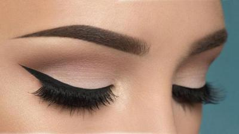
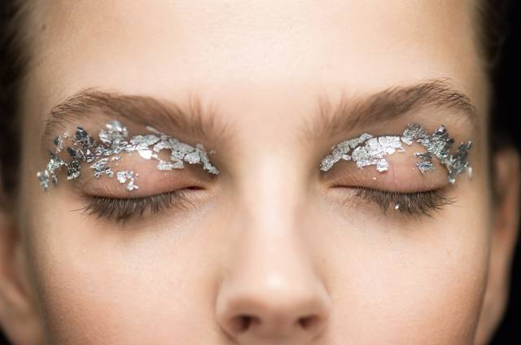

Макияж глаз
С макияжем можно перевоплощаться, становясь каждый день немного другим человеком.
Тени
Тени для век — средство декоративной косметики, применяющееся для макияжа глаз. Тени для век использовались в косметике с давних времён. При раскопках в Египте была обнаружена первая краска для век из сурьмы и сажи. Римлянки уже в середине первого столетия н. э. использовали сурьму в качестве теней для век.Тени для век являются универсальным средством, и могут применяться в макияже не только глаз. В зависимости от текстуры, их используют для боди-арта, грима или творческого макияжа. Тени, как правило, безопасны для нанесения и длительного ношения на коже. Они не ограничивают выделение кожного сала и доступ воздуха.
Ещё одной важной характеристикой теней является пигментированность. В частности, тени для домашнего применения делают полупрозрачными, чтобы уменьшить количество ошибок и избавить от необходимости растушевки. Профессиональные тени более плотные, укрывистые, что позволяет с первого слоя создать яркий макияж.

Тушь
Тушь для ресниц — декоративная косметика, предназначенная для подчёркивания, выделения и изменения естественного цвета ресниц. Тушь производится в различных формах: жидкая, кремообразная и сухая. Она также выпускается разных оттенков и цветов.Тушь предназначена для того, чтобы подчеркнуть, увеличить объём, форму и длину ресниц. Самая популярная форма выпуска туши — тубы с палочкой, на конце которой находится аппликатор-щёточка. Щёточка может быть прямой или изогнутой, в зависимости от предназначения туши — подкручивать, утолщать или удлинять ресницы.
Ингредиенты туши обычно включают воду, воск, формирующие частицы, отдушку и консерванты. Некоторые туши содержат вискозные или нейлоновые волокна для удлинения ресниц.
Стрелки
Стрелки на глазах делают глаза более заметными и выразительными, а при желании с их же помощью можно внести коррективы и что-то изменить.Модными стрелки были всегда. Мастерство рисовать их точно и красиво приходит с опытом. Мода рисовать стрелки пришла из Древнего Египта. Они носили религиозный смысл, ведь напоминали разрез глаз кошек, которым египтяне поклонялись. Поэтому и фараоны, и жрецы, и богатые египтянки пытались повторить магический взгляд кошки при помощи косметики.
Макияж со стрелками для глаз – это шанс для женщины обратить на себя внимание. И элементы такого макияжа сделают возможным, чтобы взгляд женщины демонстрировал загадку, чувственность и соблазн.

